vue cli4.0 快速搭建项目详解
搭建项目之前，请确认好你自己已经安装过node, npm, vue cli。没安装的可以参考下面的链接安装。
安装好node默认已经安装好npm了，所以不用单独安装了。
1.进入一个目录，创建项目
对应命令： vue create project-one
![]()
2.我们这里选择手动配置
按 ↓ 选择“Manually select features”，再按 Enter
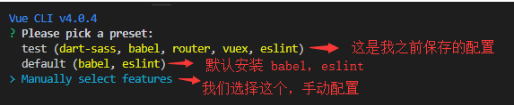
3.选择你需要的配置项
通过↑ ↓ 箭头选择你要配置的项，按 空格 是选中，按 a 是全选，按 i 是反选。具体每个配置项表示什么意思在下面会有说明。
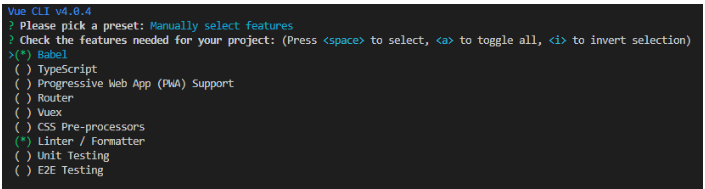
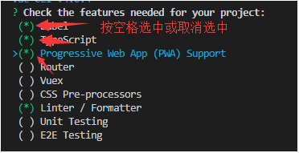
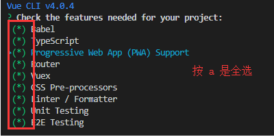
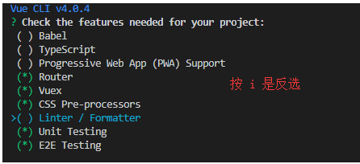
? Check the features needed for your project: (Press
>( ) Babel //转码器，可以将ES6代码转为ES5代码，从而在现有环境执行。
( ) TypeScript// TypeScript是一个JavaScript（后缀.js）的超集（后缀.ts）包含并扩展了 JavaScript 的语法，需要被编译输出为 JavaScript在浏览器运行
( ) Progressive Web App (PWA) Support// 渐进式Web应用程序
( ) Router // vue-router（vue路由）
( ) Vuex // vuex（vue的状态管理模式）
( ) CSS Pre-processors // CSS 预处理器（如：less、sass）
( ) Linter / Formatter // 代码风格检查和格式化（如：ESlint）
( ) Unit Testing // 单元测试（unit tests）
( ) E2E Testing // e2e（end to end） 测试
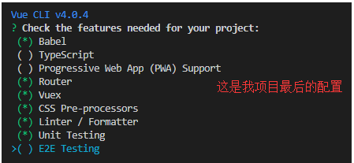
选完之后按 Enter。分别选择每个对应功能的具体包。选你擅长的，没有擅长的，就选使用广的，哈哈，方便咨询别人。
3.1 选择是否使用history router
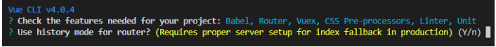
Vue-Router 利用了浏览器自身的hash 模式和 history 模式的特性来实现前端路由（通过调用浏览器提供的接口）。
我这里建议选n。这样打包出来丢到服务器上可以直接使用了，后期要用的话，也可以自己再开起来。
选yes的话需要服务器那边再进行设置。
Use history mode for router? (Requires proper server setup for index fallback in production)
3.2 选择css 预处理器
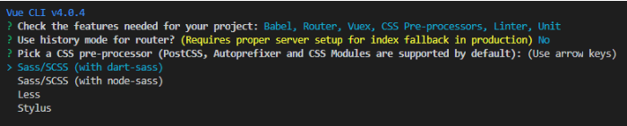
我选择的是Sass/Scss(with dart-sass)
node-sass是自动编译实时的，dart-sass需要保存后才会生效。sass 官方目前主力推dart-sass 最新的特性都会在这个上面先实现。（该回答参考http://www.imooc.com/qadetail/318730）
3.3 选择Eslint代码验证规则
提供一个插件化的javascript代码检测工具，ESLint + Prettier //使用较多
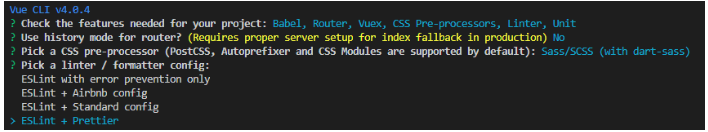
3.4 选择什么时候进行代码规则检测
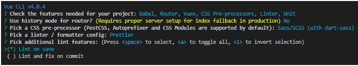
( ) Lint on save // 保存就检测
( ) Lint and fix on commit // fix和commit时候检查
建议选择保存就检测，等到commit的时候，问题可能都已经积累很多了。
3.5 选择单元测试
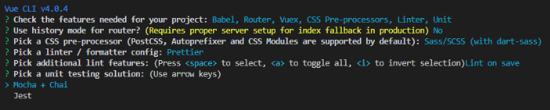
> Mocha + Chai //mocha灵活,只提供简单的测试结构，如果需要其他功能需要添加其他库/插件完成。必须在全局环境中安装 Jest //安装配置简单，容易上手。内置Istanbul，可以查看到测试覆盖率，相较于Mocha:配置简洁、测试代码简洁、易于和babel集成、内置丰富的expect
3.6 选择如何存放配置
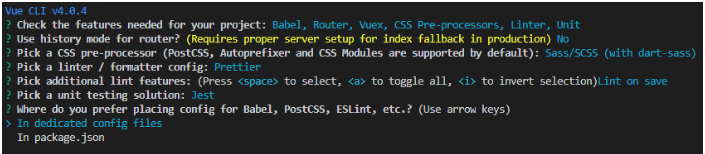
> In dedicated config files // 独立文件放置
In package.json // 放package.json里
如果是选择 独立文件放置，项目会有单独如下图所示的几件文件。
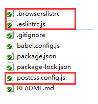
3.7 是否保存当前配置
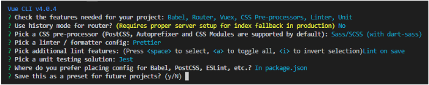
键入N不记录，如果键入Y需要输入保存名字，如第2步所看到的我保存的名字为test。
4.等待创建项目
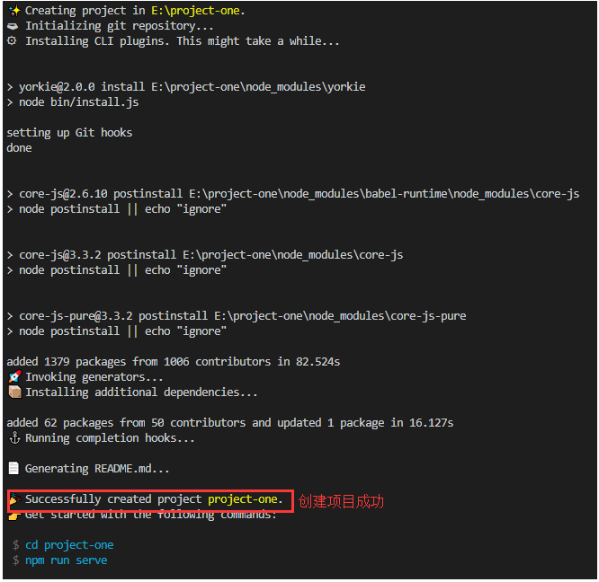
5.执行它给出的命令，可以直接访问了
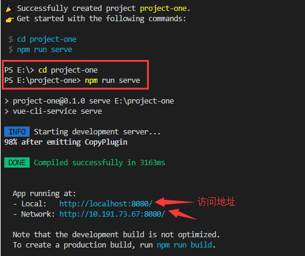